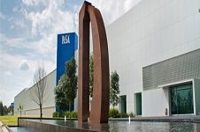

Compañia Matteo's&Coffe
Ofreciendo salud, belleza y bienestar a través de la distribución de productos naturales certificados de alta calidad por medio de la formación de redes.
Ser la cafetería incubadora de negocios de la marca BODYLOGIC, con mayor crecimiento en Latinoamérica.
Ser la empresa de mayor creación de franquicias y asociados de la marca BODYLOGIC en el estado de Chiapas y crecimiento sostenible en Latinoamérica.
¿QUÉ ES BODYLOGIC?

Es una empresa 100% Mexicana; que nace en el 2010 por el deseo y visión de un grupo de inversionistas de la Industria Farmacéutica que se dieron a la tarea de fundar una empresa de redes de mercadeo; con la finalidad de brindar la oportunidad a toda persona que desee tener un negocio propio con una mínima inversión.
¿QUÉ ES PiSA?
Es la compañía farmacéutica, concebida para diseñar, estratégicamente, desde la idea del proyecto, hasta cristalizarlo en un producto o servicio integral y colocarlo en manos del consumidor final. La experiencia de un sólido equipo apoyado con infraestructura y tecnología, así como capacidades de investigación, desarrollo, producción, logística y distribución, han permitido desarrollar la fórmula perfecta para ofrecer productos de calidad, respaldados en laboratorios 360° con capacidad de producir, en uno o en todos los procesos, diversas marcas reconocidas.